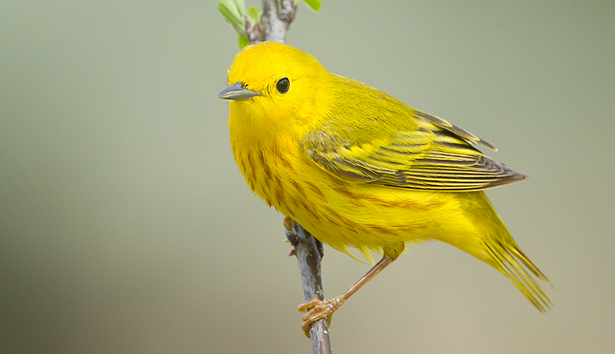
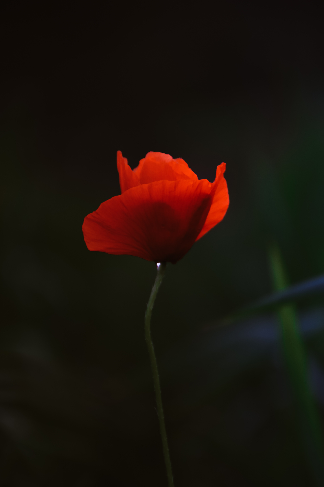
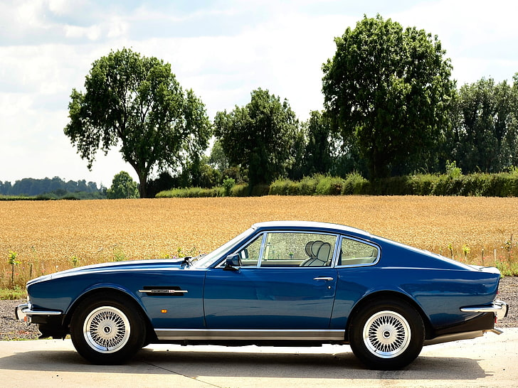
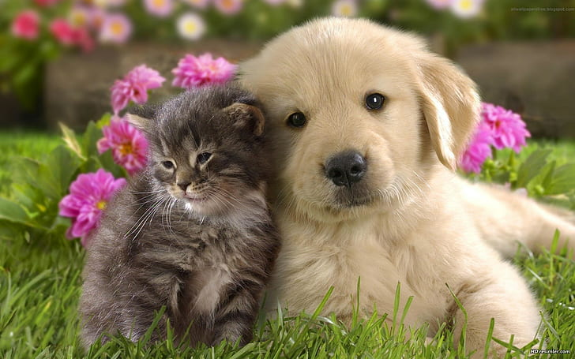
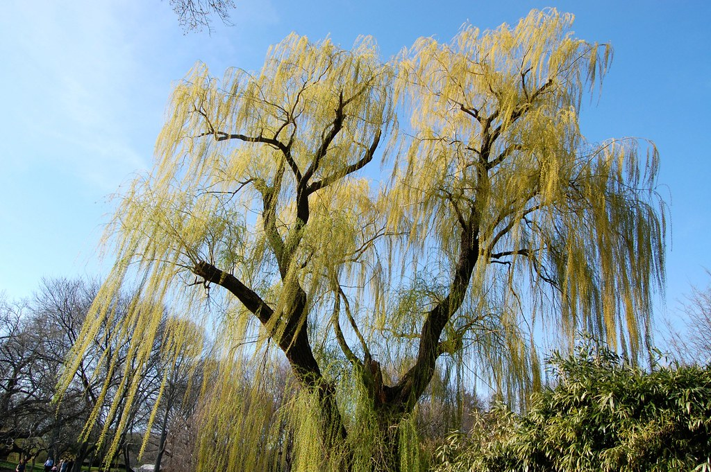

ČO SA ČAKÁ OD VÁS
Prísť na terapiu uvoľnený a bez stresu! Je dôležité, aby ste si v deň sedenia už nič ďalšie neplánovali, tak aby ste sa nikam neponáhlali a boli v pohode.
Prežiť pokojný deň, pred sedením tiež pomôže docieliť úspešný priebeh sedenia.
Tiež je dôležité, aby ste si nevytvárali prehnané očakávania, je lepšie sa nechať príjemne prekvapiť. Každý, kto sedenie raz skúsil, by si to kedykoľvek zopakoval znova.
Tiež si prosím pripravte vaše otázky, nie viac ako 10. Môžu sa týkať čohokoľvek. Spíšte si ich vopred od tej najdôležitejšej až k tej najmenej dôležitej. Spisujte si otázky priebežne tak, ako vám budú prichádzať. Keď si ich budete písať naraz, tak je veľká pravdepodobnosť, že na niektoré zabudnete.
Rád by som Vás požiadal, nech v deň terapie neužívate žiadne lieky na ukľudnenie či proti bolesti. Nepožite v ten deň kávu či energetické nápoje a ťažko stráviteľné jedlo. Odporúčal by som vám ľahké raňajky.
Po terapii sa môžete cítiť unavený alebo naopak priveľmi aktívny. Po terapii neodporúčam dlhé jazdy autom a činnosti, pri ktorých sa vyžaduje zvýšená pozornosť.
Taktiež žiadam klientov, aby v deň regresie (pred regresiou) nepoužívali líčidlá a parfémy.
Terapiu nemôžu podstúpiť ľudia s nedoslýchavosťou, schizofréniou, bipolárnou poruchou, tí, ktorí nemôžu v kľude ležať dlhšiu dobu na chrbte, ľudia pod vplyvom alkoholu, drog, antidepresív a iných psychofarmák a tlmiacich či povzbudzujúcich látok.
Tieto obrázky je vhodné si prezrieť pred terapiou




